3 EMS | FIELD DAY 2026
Operating from the Fire Tower QTH
Field Day Summary: Our crew decided that "temporary QTH" meant "vertical QTH." We deployed to a decommissioned Missouri Fire Tower, hauling gear up 100 feet of stairs. The goal was simple: test our emergency setup, run on 100% off-grid power, and take advantage of the tower’s natural height for VHF and HF antenna support. Despite the cramped quarters in the cab, we made several contacts and had an unforgettable day.
The Site & The Takeoff
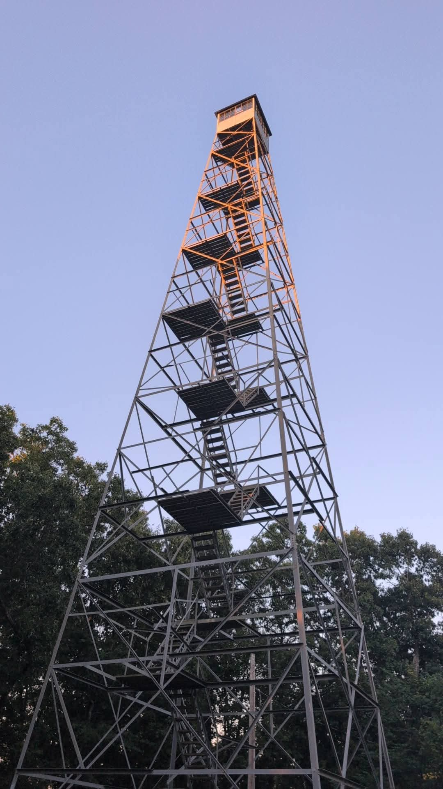
Arrival & Assessment
Our home for a few hours. The structure is solid, but that cab gets smaller every time you look up. Weather was great.
|
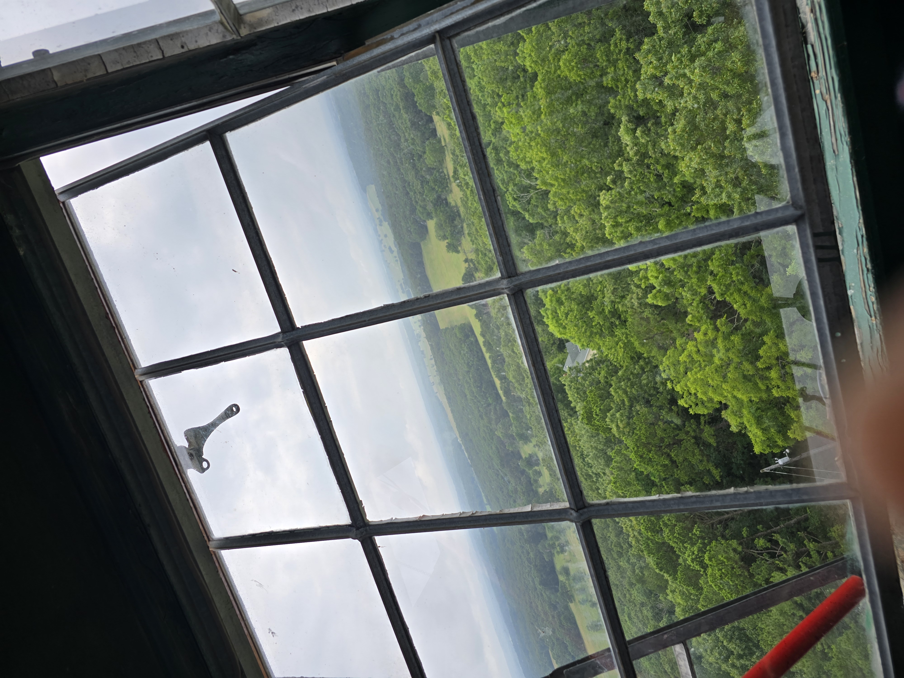
100-Foot Takeoff
The view from the top is breathtaking. Overlooking nothing but dense Missouri forest. This natural elevation gave us a fantastic advantage.
|
Station Deployment
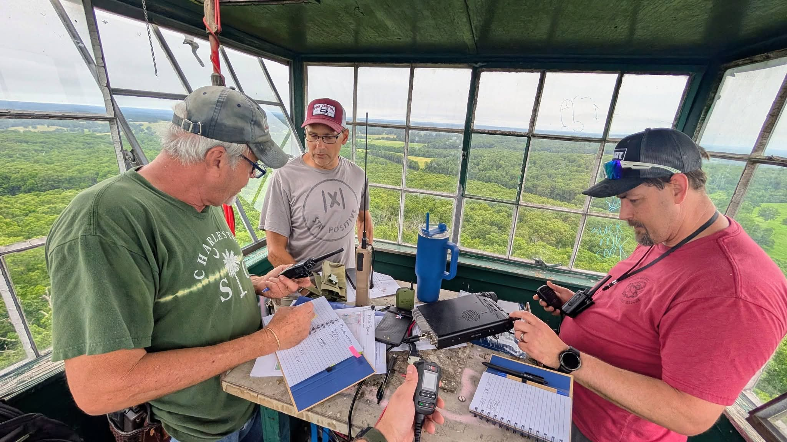
Operations Commenced
Setting up the primary station in the cab.
|
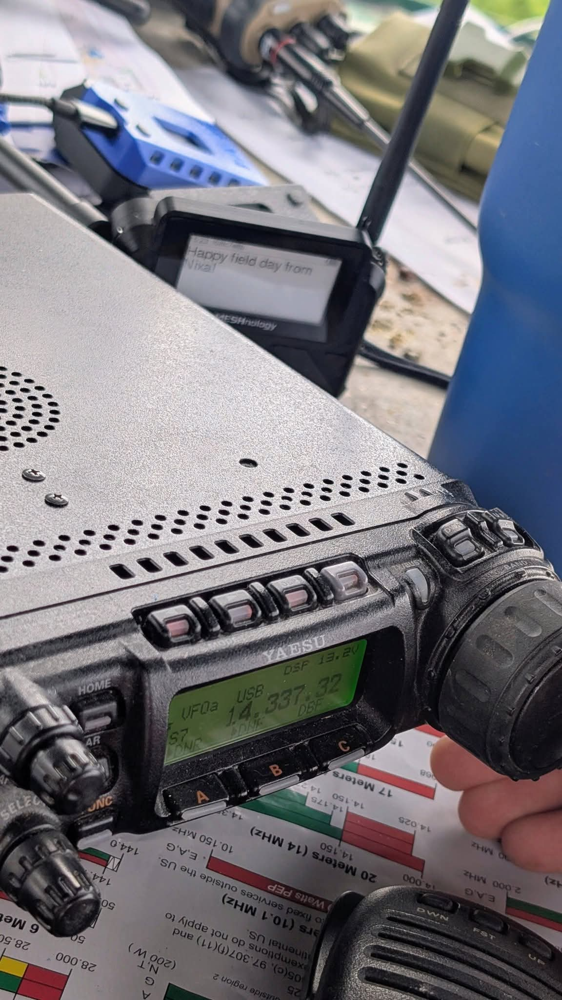
The 20M Workhorse
Our main station setup centered on the Yaesu FT-857. Here we are, dialed in on 20 meters SSB (14.337 MHz).
|
VHF & The Nerve Center
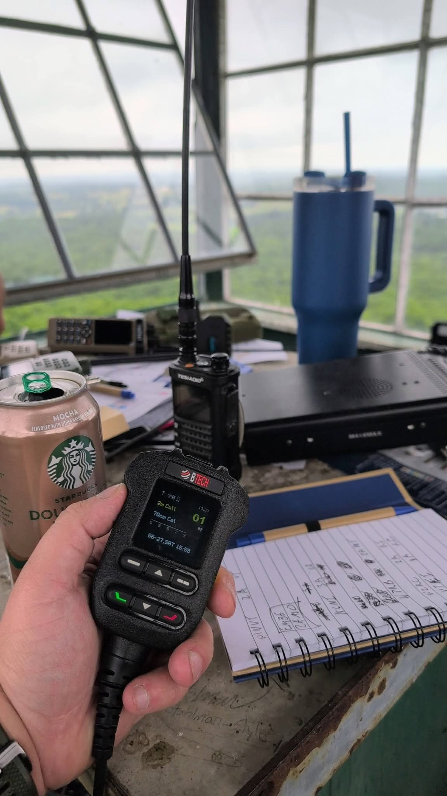
VHF/UHF Operations
Trey manning the 2M/70cm station. The tower’s height made hitting distant repeaters and simplex contacts simple. Made one contact via balloon repeater in TX.
|
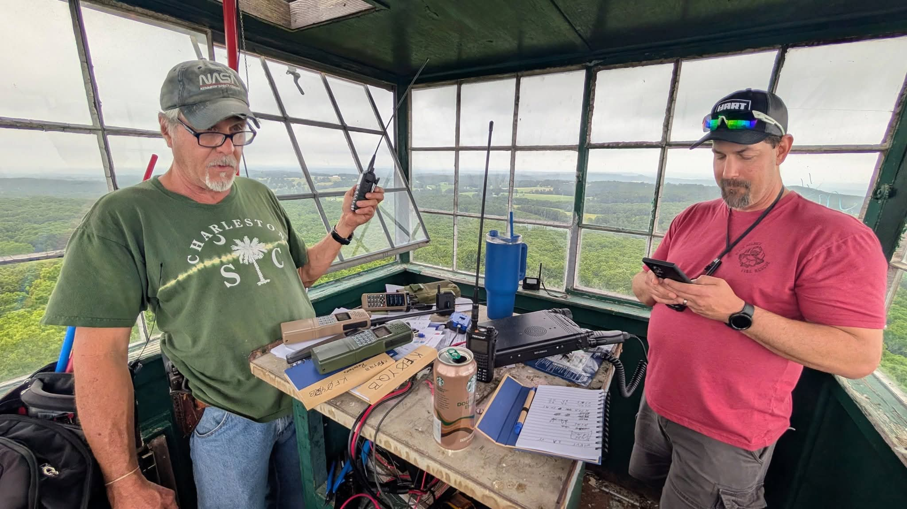
The Nerve Center
A closer look at the operating position. We deployed a Heltec MESH node for logging synchronization and network status. The cable mess is mandatory for Field Day!
|
Panoramic Views
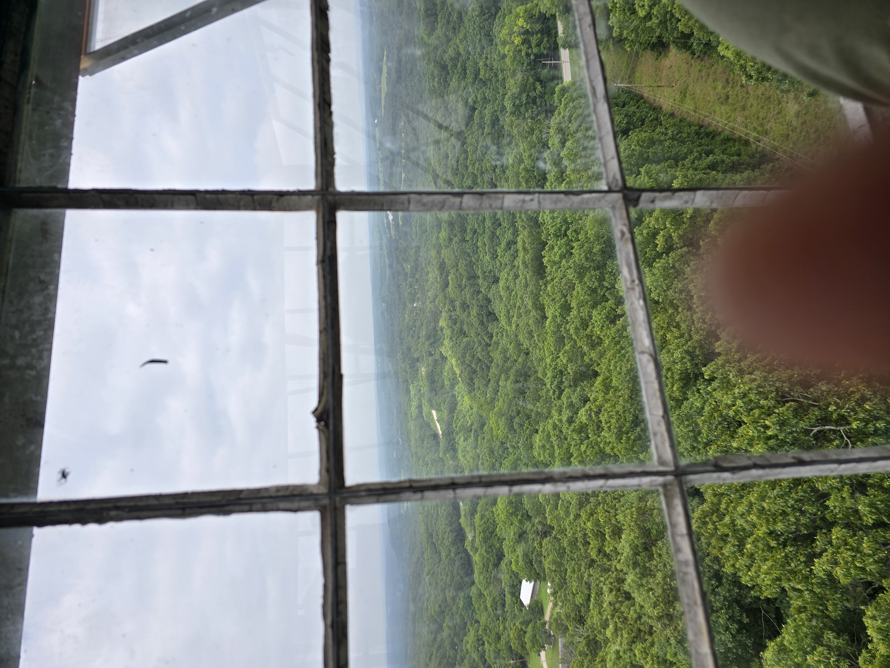
Another View
Can see for miles up here.
|
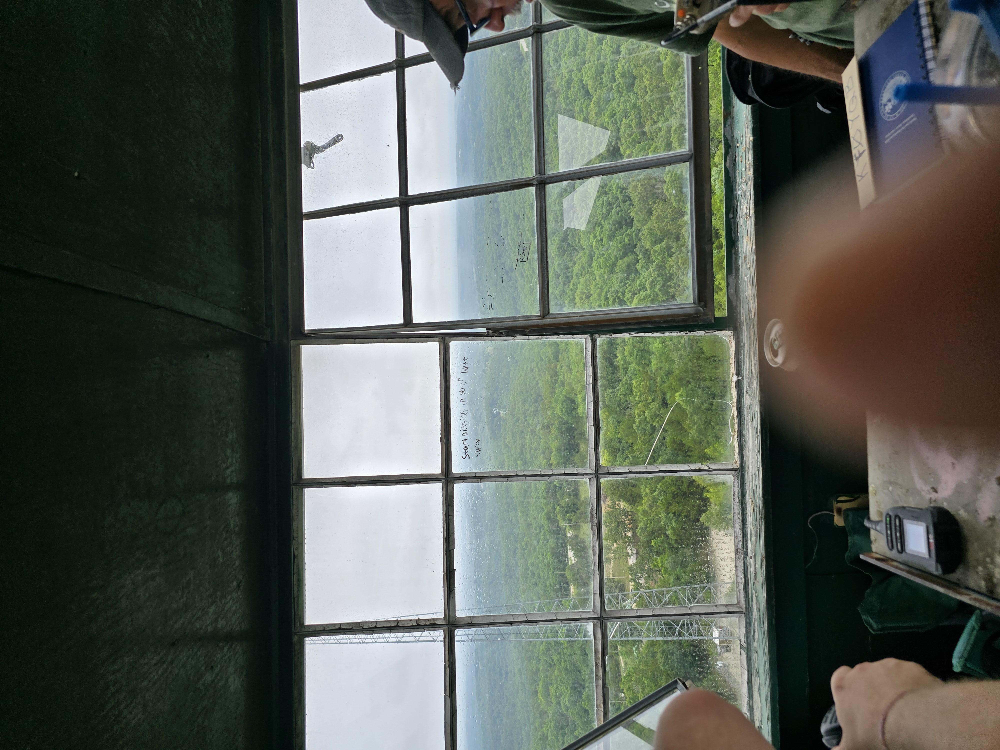
Scanning the Horizon
Another look out the cab windows. The height of this tower gave us a commanding view in every direction.
|
Power & Perspective
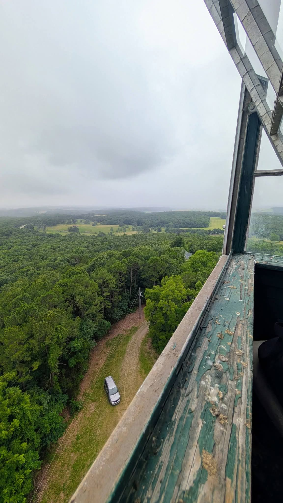
Perspective
Looking straight down past the stairs toward the support vehicle. A stark reminder of why we anchored everything, especially our tools.
|
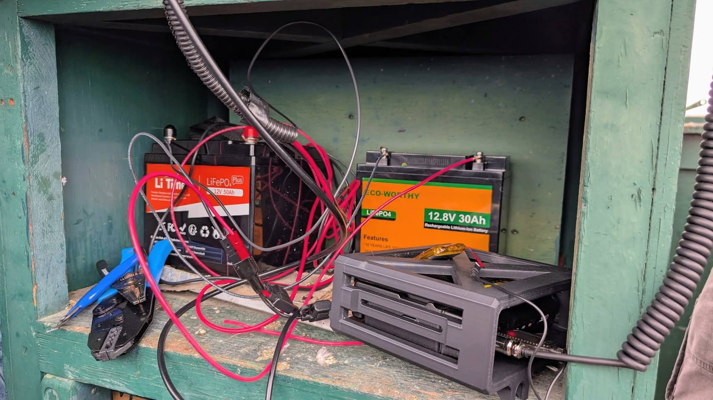
Off-Grid Power Mess
We ran entirely on LiFePO4 battery power. This setup—multiple banks wired in parallel—is a bit chaotic, but it gave us silent, reliable energy the entire weekend. Note the blue wire strippers, always necessary!
|
On The Air
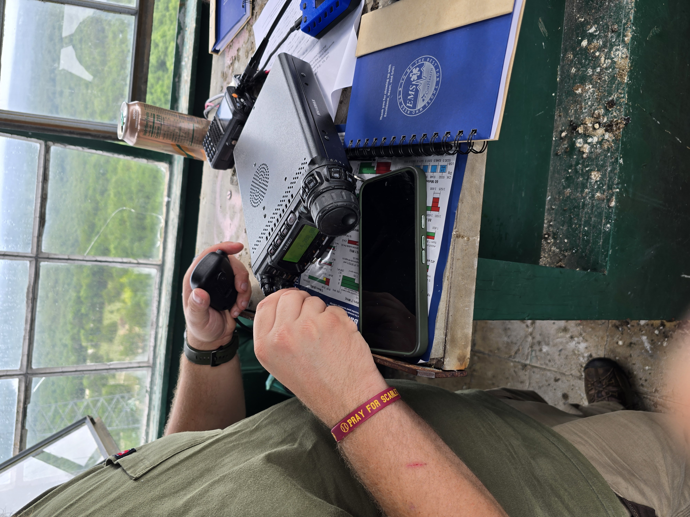
Trey On HF
Trey working the HF on SSB. Wish we had headphones in that small metal box!
|
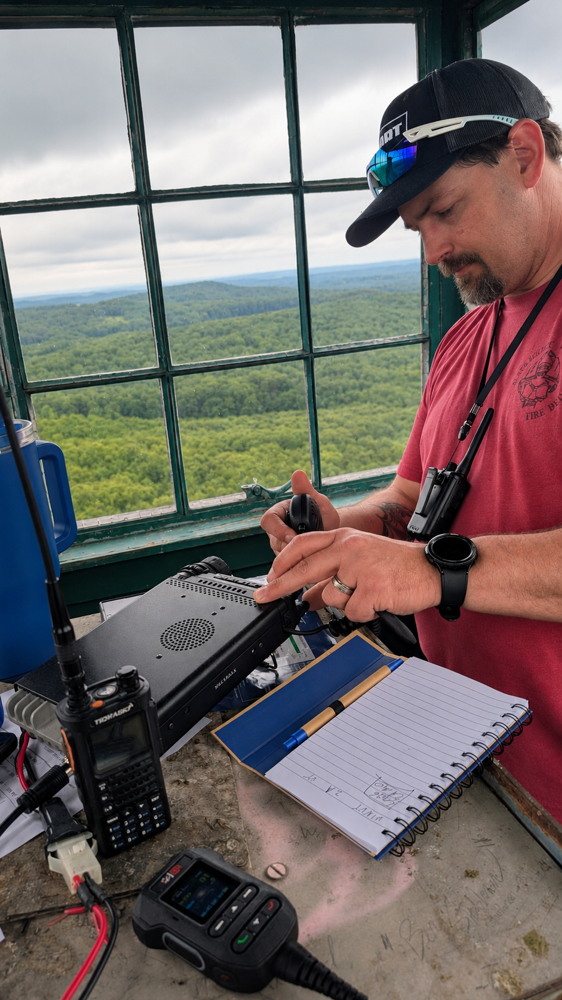
Will at the Station
Taking a turn at the HF rig. Running off-grid from a historic fire tower makes every single logged contact feel incredibly rewarding.
|
|